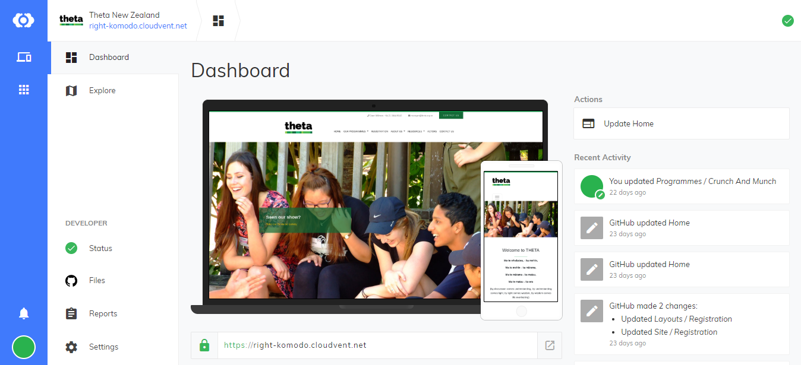

The inital plan for this project was to get the backend up and running in GitHub but having used CloudCannon tutorials religiously to get the site up and running, I was intrigued to try their content management system to see if it could be of use to Grant and other members of THETA who didn’t have the technical exprience suitable for navigating GitHub.
I set a CloudCannon account for THETA and started to sync the websites repository.
The process was seamless and CloudCannon set up the various site pages and collections in a similar way to how files would be displayed in other content management systems such as WordPress or SilverStripe. I thought this was very convenient as the THETA sites current back end was a SilverStripe CMS which meant the transition to the CloudCannon CMS would be straightforward for Grant.

File Structure